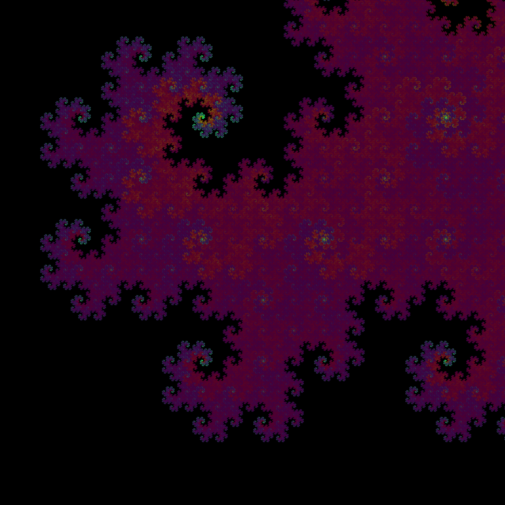

Credit to Wikipedia for this picture

Credit to Wolfram Math for this picture
Novel coloring on Dragon Curve from performance boost tactic
The Dragon Curve is found by iteratively duplicating and rotating, starting with just a single line segment. It can be understood as a sequence of line segments connected end to end,
each with an orientation of either up, down, left, or right. All methods of generating this sequence of line segment orientations involved storing the entirety of the sequence in memory,
which can be prohibitively expensive. Suppose I wanted the \(\left({2^{200}}\right)^{th}\) line segment orientation, then I would have to calculate all previous segments and refer to them in the computation.
In the first gif, notice if you want to calculate the \(2^n + x\) segment direction where \(x{<}2^n\), you take the \((2^n-1-x)\) segment and rotate it \(90^\circ\). Suppose
we had a function \(f\) that took the number \(n\) to the number of times that the \(n^{th}\) line segment in the Dragon Curve had been rotated \(90^\circ\), then
\(f(0)=0\) and we can recursively determine that for any number \(x{>}0\) that has binary string representation \(1x_1x_2\cdots x_n\), that
\[f(1x_1\cdots x_n) = 1+f(\,(1-x_1)(1-x_2)\cdots(1-x_n)\,)\]
For example, the number 5 has binary string representation 101, so \(f(5)=1+f(2)\) where 2 has binary string representation \(10=(1-0)(1-1)\). Through trial and error,
I was able to show the function \(f(x)=f(x_1\cdots x_n)=x_1 + x_1\oplus x_2 +x_2\oplus x_3 +\cdots + x_{n-1}\oplus x_n\) has this property, where \(\oplus\) is the XOR operator on binary bits.
For computer scientists, it can simply be defined equivalently as \(f(n) = (n{>}{>}1) \land n\) where \({>>}\) and \(\land\) are left shifting and XOR-ing respectively. This operation
is time-complexity and space-complexity \(O(\log n)\), as opposed to the space-complexity \(O(n \log n)\) of naive approaches. Additionally, this function shows there is a close connection between
binary representation of a number and it's segment on the Dragon Curve, that can be leveraged for novel coloring. These colorings below are different color-ramps that depend on the proportion of 1's in the binary representation at that step.
